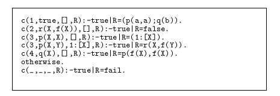

のようなMG節についても、
のような1本のKL1節で表現することができよう。この場合、連言照合の度に モデル候補中からアトムの対 {Ai,Aj} を作ることにすれば前件全体を一度に照合することができる。 しかしこの方法には冗長性が含まれている。 たとえば {p(a,b),Aj} の対はすでに第1リテラルにおいて p(X,X) との照合で失敗することが明らかであるにもかかわらず、 すべての Aj について無駄に連言照合を実行してしまうからである。
このような冗長性を省くためには、連言照合を前件リテラル個別に実行できるように、 1本の MG 節を複数の KL1 節に分離して表現すればよい。 ただし、この場合には 前件リテラル間の共有変数の同一性をいかに保つかという問題が生じる。 これを解決するには、たとえば、
c(n,p(X,X),[],R):-true|R=(1:[X]).
c(n,q(X,Z),1:[X],R):-true|R=p(X,Z).
のような2本のKL1節で表現すればよい。 ここでは、Xが第1リテラルと第2リテラルおよび後件との共有変数であり、 第2リテラルに対応する c/4 の第3引数で 1:[X] を受ける ことにより、共有変数Xの同一性を表現している。 この表現方法に基づいて、前出の問題 S の MG 節集合を KL1 節集合で表現した実例を 以下に示す。

Dが空の場合、MG節集合はMで充足可能(Mがモデル)である
という結果を得てメインループを終了する。
Dが空でない場合、
pickup/3 によりモデル拡張候補 Δ を
一つ選び、これに対し subsTest/3 によりMのもとでの充足性を調べる。
もし Δ がMで充足されているならば、
モデル拡張候補集合の残りD1について再びメインループに入る。
そうでなければ、
Δ が選言である場合、caseSplit/6 により場合分けを行なう。
Δ がアトムである場合、Mはこれを含むように拡張される。
拡張されたモデル候補 M∪{Δ}に対して、 モデル棄却規則が適用できれば、 MG節集合はMのもとで充足不可能である(Mはモデルになり得ない) という結果を得てメインループを終了する。 モデル棄却規則が適用できない場合、 拡張されたモデル候補 M∪{Δ}に対して、 前件の連言照合を適用し、 新たなモデル拡張候補集合Newとする。 これを addNew/3 によってモデル拡張候補集合の残りD1に加え NewDとして再びメインループに入る。 連言照合手続き cjm/5 は、節番号Nのリストとモデル候補Mを受け、 リスト中のすべての節について連言照合cjm1/6を行ない、 結果を差分リストRh-Rtに詰めて返す。
1本のMG節に対する連言照合手続きcjm1/6では、 各前件リテラルに対し、M中のすべてのアトムについて連言照合を行なう。 このとき、MG節集合のKL1表現c/4が呼ばれる。 当該リテラルについてM中のアトムAによるc/4での照合結果が failの場合、このリテラル-アトム対の照合結果は空である。
共有変数情報 (_:_) が返された場合、
引き続くリテラルについての連言照合を進める。
それ以外の場合、前件全体の連言照合が成功して後件が返されているので、
これをRh-Rmの差分リストに詰めて返す。
当該リテラルについてM中の他のアトムによる連言照合結果は、
差分リストRm-Rtに詰めて返される。